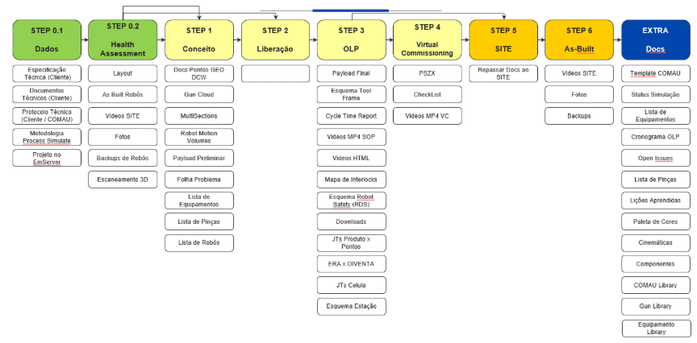
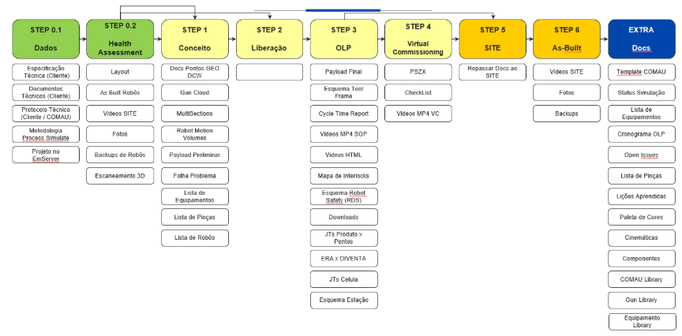

.png)
Metodologia de Simulação - COMAU
1. Escopo
Este documento foi criado para alinhar as expectativas relacionadas ao fornecimento de material técnico necessário ao desenvolvimento de simulações e à programação de robôs off-line (OLP). Além de simplificar o entendimento das normas COMAU e do cliente, ele busca integrar todas as documentações normativas, garantindo eficiência e alta qualidade na execução dos projetos.
2. Especificações Técnicas
- 2.1 Todas as simulações devem ser realizadas utilizando o software Tecnomatix 15.1 (Siemens) e controladores de robô, como FANUC-8.30, conforme especificado pelo cliente.
- 2.2 Cliente: Os documentos direcional do cliente, como SOR ou GVOSS, são essenciais para garantir que todas as atividades estejam em conformidade com os padrões esperados.
- 2.3 COMAU: O projeto segue diretrizes da COMAU com base em documentos como Protocolo Técnico, Metodologia Simulação, e ProjectBook.
3. Estrutura do Projeto
Organizar o projeto de simulação de maneira eficaz é fundamental. A base do projeto abrange todos os elementos principais necessários para uma simulação robusta.
3.2 Estrutura de Componentes Library: Inclui componentes reutilizáveis para diversos projetos, otimizando tempo e recursos.
3.3 Estrutura de Operações/Recursos: Descrição de operações específicas e os recursos necessários para executá-las.

3.4 Estrutura de Produto: Detalhamento dos produtos simulados, incluindo características técnicas e funcionais.
4. Etapas da Metodologia
O desenvolvimento do processo de simulação segue um fluxo detalhado, conforme as etapas do projeto, como descrito nos elementos abaixo.
 

- STEP 0.1: Coleta inicial das normas, documentos, produtos e pontos de referência para um começo sólido.
- STEP 0.2: Coleta de fotos, vídeos e escaneamento 3D numa visita à planta, validando os processos vigentes.
- STEP 1: Definição e validação do conceito de célula e processo, abrangendo aspectos como acessos e manutenção de robôs.
- STEP 2: Liberação e aprovação de dispositivos padrões e componentes construtivos.
- STEP 3: Programação dos robôs utilizando macros, lógica e testes de ciclo de tempo.
- STEP 4: Integração virtual de OLP e CLP para eficiência na implementação.
- STEP 5: Alinhamento de atividades e handover com o time de campo.
- STEP 6: Recolher backups e atualizações para integrar nos layouts de células.
5. Documentações Requeridas
- As entregas oficiais devem ser feitas em Pack and Go; XML não é aceito.
- Nuvem de Pinça, MultiSections e esquema de segurança do robô.
- Payload preliminar e final.
- Relatórios de tempo de ciclo, vídeos de validação e volumes de movimento dos robôs.
- Manter mapas de colisão atualizados e downloads offline.
5.2 Nuvem de Pinça: Criação de nuvem de pinça com base na biblioteca do cliente/COMAU, gerando JT e atualização após OLP.
5.3 MultiSections: Desenvolvimento das multisections das pinças baseadas nos dados de solda, com envio da documentação para validação do fornecedor.
6. Acompanhamento do Projeto
- Tabelas para controle de equipamentos usados nas células, com IDs de cada elemento.
- Acompanhamento semanal de Open Issues e revisão do design com fornecedores.
- Criação de registros para cada problema com solução proposta.
- Preenchimento dos documentos de checklist conforme etapas.
- Alinhamento com o time de VC e Site para cumprimento dos prazos.
- Compilação e compartilhamento de aprendizados ao longo do projeto.
- Documentação conforme padrão COMAU.
Última atualização: 17 de março de 2021 — Vinicius Zatti (Digital Manufacturing)